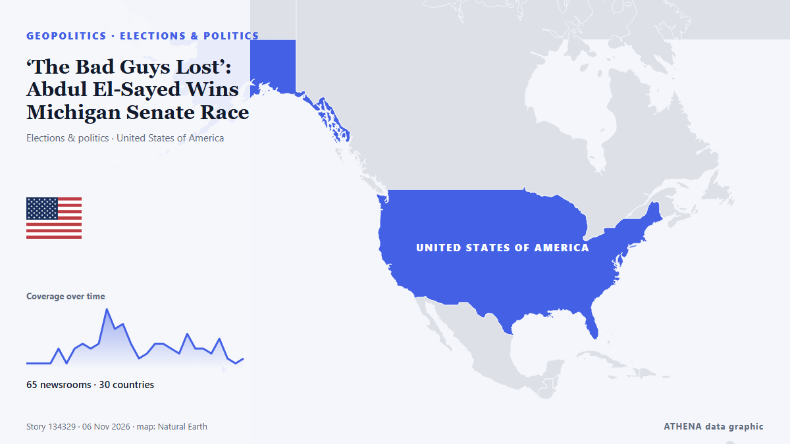

‘The Bad Guys Lost’: Abdul El-Sayed Wins Michigan Senate Race

With New Hampshire and Georgia staying in Democratic hands, Republicans now look to Michigan for a pickup, where Democrat Abdul El-Sayed is competing with Republican Mike Rogers. von France 24 English
Unabhängig gemeldet von 67 Medien in 30 Ländern seit dem 3. Nov., zuerst von Rolling Stone; die Berichterstattung ist auf dem Höhepunkt. ATHENA stuft das Risiko als erhöht ein (4.5/10), vor allem wegen der Schwere des beschriebenen Schadens und seiner geografischen und sektoralen Reichweite. Die Konfidenz liegt bei 89 % (hoch): 67 Medien bestätigen es unabhängig, bei einer mittleren Verlässlichkeit der Quellen von 74 %. Medien nach Land: Vereinigte Staaten (13), Frankreich (7), Singapur (2). Berichterstattung: 3. Nov. bis 4. Nov., 22 Stunden.
Warum es wichtig ist: Sicherheits- und diplomatische Entwicklungen können Bündnisse, Handel und Märkte weit über die direkt beteiligten Länder hinaus verschieben.
Was sich geändert hat: 52 neue Berichte von 38 Redaktionen in den 24 Stunden bis 6. Nov..
Erste Schlagzeile: Midterms: Abdul El-Sayed, Mike Rogers face off for Michigan Senate seat
Schlagzeilen werden auf Englisch angezeigt, wie veröffentlicht.
Auf einen Blick
Ausgewählt, bewertet und geschrieben nach der veröffentlichten Methodik von ATHENA. Kein Redakteur greift in einzelne Ereignisse ein. So entsteht ATHENA ›
| 03 Nov 18:30 UTC | 1 |
|---|---|
| 03 Nov 20:30 UTC | 1 |
| 03 Nov 22:30 UTC | 1 |
| 04 Nov 00:30 UTC | 1 |
| 04 Nov 02:30 UTC | 4 |
| 04 Nov 04:30 UTC | 1 |
| 04 Nov 06:30 UTC | 4 |
| 04 Nov 08:30 UTC | 5 |
| 04 Nov 10:30 UTC | 4 |
| 04 Nov 12:30 UTC | 5 |
| 04 Nov 14:30 UTC | 12 |
| 04 Nov 16:30 UTC | 8 |
| 04 Nov 18:30 UTC | 9 |
| 04 Nov 20:30 UTC | 5 |
| 04 Nov 22:30 UTC | 2 |
| 05 Nov 00:30 UTC | 3 |
| 05 Nov 02:30 UTC | 5 |
| 05 Nov 04:30 UTC | 5 |
| 05 Nov 06:30 UTC | 4 |
| 05 Nov 08:30 UTC | 3 |
| 05 Nov 10:30 UTC | 7 |
| 05 Nov 12:30 UTC | 4 |
| 05 Nov 14:30 UTC | 4 |
| 05 Nov 16:30 UTC | 3 |
| 05 Nov 18:30 UTC | 6 |
| 05 Nov 20:30 UTC | 3 |
| 05 Nov 22:30 UTC | 1 |
| 06 Nov 00:30 UTC | 4 |
Warum diese Zahlen
Bedeutung
Risiko
Konfidenz
Die Berichterstattung – wer berichtete, und wann
Schlagzeile wie veröffentlicht · öffnet das Original- Rolling Stone · Vereinigte StaatenCan Dems Actually Win the Senate? Here’s a State-by-State Guide
- The Hill · Vereinigte StaatenSullivan campaign, NRSC form 'recount fund' for Alaska Senate race
- The Straits Times · SingapurUS midterms: Alaska Republican Dan Sullivan accuses Democrats of planting ‘decoy’ Daniel J. Sullivan
- The Daily Star — page reader · BangladeschAlaskan in tight Senate race accuses Dems of 'election cheating'
- France 24 English · FrankreichMidterms: Abdul El-Sayed, Mike Rogers face off for Michigan Senate seat
- PBS NewsHour · Vereinigte StaatenMaryland voters pass Democratic-backed redistricting amendment
- The Independent · Vereinigtes KönigreichCNN nails election night with gas prices highlighted on ‘magic wall’ during midterms returns
- Gothamist (New York City) · Vereinigte StaatenRepublican Jeff Van Drew concedes NJ congressional seat in surprise victory for Democrats
- NPR · Vereinigte StaatenOn a historic night for democratic socialists, Mamdani says midterms show power of working-class voters
- The Hill · Vereinigte StaatenForstag flips Montana House seat, beating Trump-backed opponent
- NPR · Vereinigte StaatenRepublicans tried to gerrymander their way out of big congressional losses. It didn't work
- France 24 English · FrankreichMidterms: What impact did redistricting in California and Texas have?
- Khaama Press · AfghanistanAbdul El-Sayed Wins Michigan Senate Race, Becomes First Muslim US Senator
- France 24 English · Frankreich'The mood got better and better as the night went on': Dems celebrate midterms victory
- The Canadian Press (via CityNews) · KanadaDemocrats deliver a stunning rout in Texas to retake power for the first time in decades
- France 24 English · FrankreichAbdul El-Sayed set to become first Muslim senator after win in Michigan
- France 24 English · Frankreich'A generational win' for Dems as blue wave sweeps midterms
- Ship.Energy · INTClimate NGOs hope Democrats’ US midterm victory could spark breakthrough on IMO’s NZF
- The New Arab · INTPalestinian-American Rashida Tlaib wins re-election in Michigan
- Premium Times · NigeriaHistory in US as Americans elect first Muslim, native American senators, other firsts too
- The Straits Times · Singapur'A mandate for change': Democrats remake Texas politics in election rout
- Egyptian Streets · ÄgyptenEgyptian-American Abdul El-Sayed Wins Michigan Senate Seat, Becoming First Muslim Senator
- Montana Free Press · Vereinigte StaatenAP calls it: Democrat Sam Forstag defeats Flint in Western House flip
- CommonDreams · Vereinigte StaatenYouth Vote Delivers Historic Victories in Michigan and Nationwide
- Euronews English · Frankreich'A feeling of redemption': Young voters in Maine hail Democratic victory
- TASS (English) · RusslandDemocratic win and Trump’s reaction to outcome of midterm Congressional election
- Aravot (English) · ArmenienAbdul El-Sayed Wins Michigan Senate Race
- Türkiye Today · TürkeiUS midterms redraw the map of power in Washington
- Euractiv · BelgienCommission keeps digital tax proposal alive
- Indian Express · IndienFrom El-Sayed to ‘mini Mamdanis’: US midterm 2026 wins deepen Netanyahu’s political troubles
- Times of India · IndienTrump loses war at home: Democrats storm red bastions, seize both House and Senate
- The Independent · Vereinigtes KönigreichSky News reporter responds after heated El-Sayed confrontation: ‘Disappointing’
- Mehr News (English) · IranTrump’s economic plan against Iran backfired: Hemmati
- Rolling Stone · Vereinigte StaatenFrom ‘Talafreako’ Tees to Anti-Trump Towels, Etsy Sellers Celebrate Democrats’ Midterm Win With New Merch
- Al Jazeera English · KatarDemocratic voters celebrate El-Sayed’s Michigan win in election ‘blue wave’
- The Hollywood Reporter · Vereinigte StaatenWhat Abdul El-Sayed’s Wild, Historic Ride to the Senate Means to One Michigander
- Billboard · Vereinigte StaatenThe Chicks Celebrate Democrats’ Historic ‘Blunami’ Midterm Election Victory With Two-Word Message to President: ‘F–k Trump’
- France 24 English · FrankreichTale of 2 midterms: Republican redistricting 'backfired' while Democrats 'exceeded all expectations'
- TRT World · TürkeiSouth Africa leader sees 'new era' in US ties after Democrat victory
- CNBC World · Vereinigte StaatenWhat Republicans' huge loss means for Trump